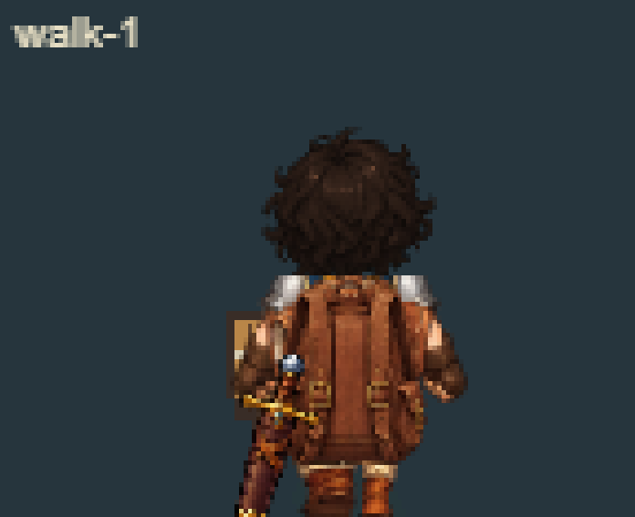
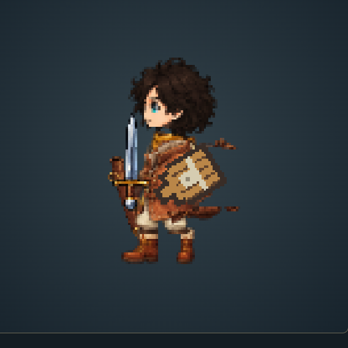

DUNGEON TEACHER · ITERAÇÃO 36Revisão Visual 2
Compare a RV1 com a nova postura de caminhada: antebraços articulados, espada baixa quando empunhada, escudo acompanhando o braço e mochila preservada.
Aprovação visual provisória, aguardando inspeção do usuário. Testes de geometria e continuidade não substituem a avaliação da naturalidade. As imagens abaixo vêm do compositor e do renderizador usados pelo jogo.
As duas referências enviadas pelo usuário

Captura de costas, identificada como walk-1 na galeria anterior.
Referência lateral preservada na RV1.O antigo rótulo walk-1 selecionava a segunda célula da caminhada. Esta galeria usa explicitamente as células 1 a 5. A imagem isolada não contém os dados da conta; a reprodução usa um guerreiro equivalente com a combinação legítima de equipamentos.
O equipamento é o mesmo nos dois lados. Guardada: arma vinculada ao quadril. Empunhada: arma vinculada ao punho. A mochila pode ocultar partes da arma e do escudo. Percorrer caminhada mostra as cinco capturas; o vídeo abaixo registra a animação contínua.
Tamanho de jogo e silhueta
Mesma captura, sem ampliação e reduzida à metade. A silhueta serve à inspeção visual; não é uma pontuação automática de qualidade artística.
Ciclo completo e transições
Quarenta segundos com espada, arco, cajado e lâminas curtas. Cada família inclui repouso, os cinco quadros da caminhada de costas, preparação, golpe, recuperação e retorno à caminhada, além das demais direções. A arma permanece empunhada durante o trecho de caminhada.
Quadros intermediários extraídos da gravação
Gravação coletiva: seis classes e dois corpos
24 atores simultâneos: RV1 à esquerda e RV2 à direita, com ciclos completos de costas e as quatro famílias de armas.
Pegar e guardar a espada — movimento ampliado no tempo
Quatro direções, com a transição desacelerada no laboratório para observar a mão alcançando a bainha. O jogo mantém seus tempos originais de saque e guarda.
ADM e dois clientes Aluno
Equipamentos confirmados pelo servidor, caminhada e mudança de direção, combate, trocas de equipamento, reconexão e reinício. Banco e contas temporários. “Revisão Visual 1” e “Revisão Visual 2” são os nomes dos dois personagens de teste; ambos os clientes executam a RV2.
Evidências e limites
192 pranchas, organizadas em 96 pares: seis classes, dois corpos, oito combinações, quatro direções e vinte estados por prancha. Os testes separam geometria, anatomia, perspectiva, continuidade e aprovação visual. Consulte as medições de desempenho e os limites da validação no relatório.
Relatório completo · Aplicativos e SHA-256